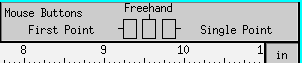
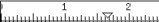
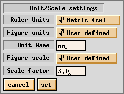
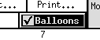
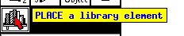
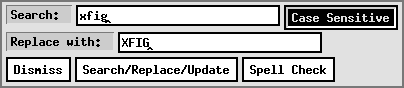

![[Unit Box]](images/unit-box.gif)

[ English Version | Japanese Version ]
[ Contents | Operating Manual | New Features and Bugs Fixed | Technical Information | Authors ]
[ Introduction
| Command Panel
| Drawing Mode Panel
| Editing Mode Panel
| Indicator Panel
| Miscellaneous Panels
| Keyboard Accelerators ]

Mouse Function Indicator shows which functions are assigned to each mouse button.
Although the function of each mouse button changes depending on the state (selected mode, position of the mouse cursor, state of SHIFT key or CONTROL key, etc) at the time, the mouse function indicator shows the current function at all times.
If the TEXT mode is selected and it is ready to enter text from keyboard, the mouse function indicator shows that as a keyboard icon.
See also Balloons Button.

The rulers are placed at the top and right (left, if the drawing mode panel is right) of the canvas, and the scale selected by UNIT Box is displayed on them (i.e. inches or cm). Normally, triangular markers which show the mouse cursor position are also displayed on the rulers. The rulers may also be used to scroll the canvas.
To scroll the canvas, press mouse button 2 (`Drag') on the ruler and move cursor left/right or up/down; the ruler will be moved following the cursor, and the contents of canvas will be moved when mouse button is released. If the SHIFT key was pressed during this operation, the canvas will scroll five times further than the mouse movement.
Clicking on the ruler with mouse button 1 (`Pan Left' or `Pan Up') or mouse button 3 (`Pan Right' or `Pan Down') will scroll the canvas by 1/2 inch (1cm, if unit is cm). The arrow keys have the same effect, too. If the SHIFT key was pressed during those operations, amount of scroll will be five times further.
The canvas view will be moved to the origin if mouse button 1 (`Pan to Origin') is clicked on the UNIT Box, or mouse button 2 (`Pan to Origin') is clicked on the canvas while the CONTROL key is down.
The UNIT Box is placed where the top and side rulers meet. The units of the ruler (in or cm) and the scale of the drawing (e.g. 1cm=3km) will be displayed here.

 Ruler units
Ruler units
Figure units
Unit name
Figure scale
Scale factor
The default value can be set by command line options and resources.

If this button is ON, `balloon' messages corresponding to the object the mouse is positioned over will popup after a predetermined time (in milliseconds; resource Fig.balloon_delay). Here is an example:


Search
Case Sensitive
Replace with
Search/Replace/Update
If the Replace button in the results window is clicked after the search, the string specified in Search field will be replaced with the string specified in the Replace with field. If the UPDATE button is clicked after the search, the UPDATE will be performed for those texts, applying settings in the Indicator Panel to the matched text objects. The Undo function does not work for text changed by the replace operation.
Spell Check